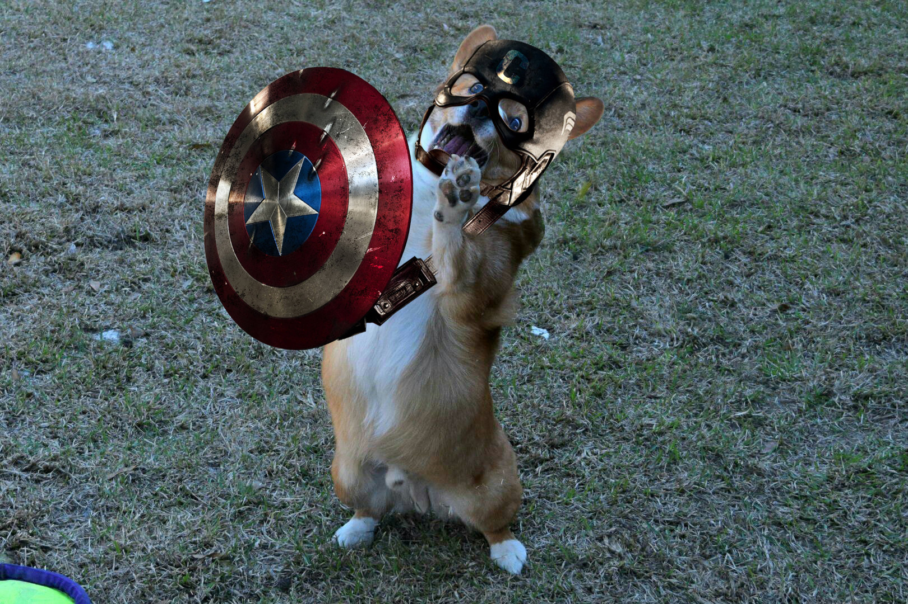

Computer Vision Projects
#1. General Detection of Image Manipulation
In the contemporary landscape, the widespread availability of image editing software has fueled a surge in image manipulation. Detecting and preventing the dissemination of altered images has become crucial, particularly within the domains of journalism, forensics, and social media. I am excited to present the outcomes of our extensive experimentation with various deep neural network-based methods for the identification of manipulated images.

Our approach involved training these models on a comprehensive dataset that encompasses both original and altered images. We conducted a detailed analysis, evaluating the performance of six distinct modern deep learning architectures on our dataset. Additionally, we introduced a novel architecture that combines Error Level Analysis (ELA) with ResNeXt, yielding results that surpass the capabilities of conventional deep learning models. Our findings underscore the potential of deep learning techniques in achieving a broad detection of image manipulations. I take pride in engineering a cutting-edge deep learning model that seamlessly integrates Error Level Analysis and ResNeXt. This integration has empowered us to achieve highly accurate detection of image manipulation, surpassing industry benchmarks and establishing new standards in the field of image forensics. Our model achieved an impressive accuracy score of 94%. This project represents my dedication to pushing the boundaries of image analysis and contributing to the advancement of image forensics technology.
#2. Optical Music Recognition
We have developed a model dedicated to the precise detection of staff lines, musical notes, and rests within a music sheet. To identify the staffs, we skillfully employed the Hough transform, considering lines that received a minimum of 70% votes in the accumulator, meticulously analyzing the Hough space.
In addition, we crafted a highly effective Normalized Cross-Correlation template matching algorithm, which adeptly identified bounding boxes for notes, eighth notes, and quarter rests. This was accomplished by applying specific threshold values of k = 4, 1.75, and 2, respectively. This project showcases our expertise in computer vision and our commitment to delivering accurate and efficient solutions for music sheet analysis.
#3. Projections, Transformations, Cameras, Stereo
we're excited to showcase our collaborative work on a diverse range of projects, including 3D-to-2D projection, Markov Random Fields for belief propagation, and stereo matching for disparity map generation. For the 3D-to-2D projection task, we developed a program that computes projection matrices to simulate an airplane's flight. It involved intricate calculations and transformations, allowing us to visualize the aircraft's movements in a 3D world.

In the context of Markov Random Fields, we implemented Loopy Belief Propagation to address complex optimization problems. This involved processing political data to find optimal solutions under certain constraints. Additionally, our work on stereo matching tackled the challenge of estimating disparities between stereo images. We implemented both a naive approach and a more sophisticated Loopy Belief Propagation technique, achieving competitive results on various test images. These projects demonstrate our proficiency in computer vision, optimization, and algorithm development.